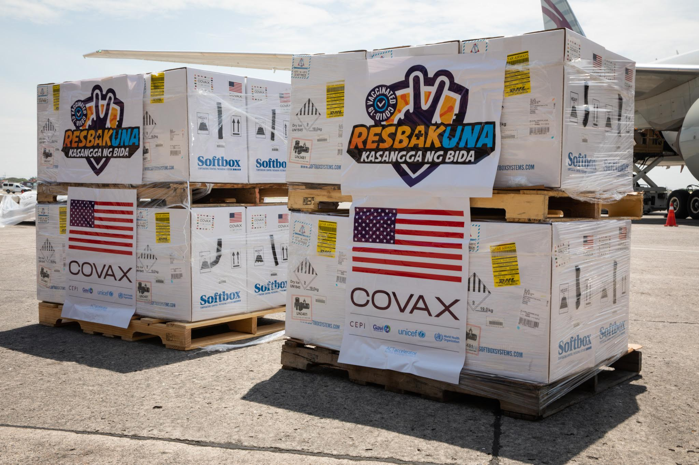

Home
Current News
Pandemic News
Good News
Covid19 – Current Updates
Covid-19 cases drop by 22%
By John Eric Mendoza, Reporter
INQUIRER.net / 08:40 PM March 20, 2022
Reference: https://newsinfo.inquirer.net/files/2020/10/2020-10-03T080623Z_1_LYNXMPEG9205E_RTROPTP_4_HEALTH-
CORONAVIRUS -PHILIPPINES.jpg
The Philippines remained at “very low risk” for another COVID-19 surge, according to the monitoring group OCTA Research.
Citing global data as of March 18, OCTA Research said confirmed COVID-19 cases decreased by 22 percent to an average 527 daily during that week compared to the previous week.
The computed average daily attack rate of 0.47 indicated less than one new COVID-19 case detected daily per 100,000 population during the past week.
OCTA Research said 24 more COVID-19 deaths were recorded by the Department of Health (DOH), pushing the death toll to 58,023 out of 3,673,717 confirmed coronavirus cases.
On March 15, the DOH said all areas in the country were now at low risk for COVID-19.
As of March 18, Timor-Leste, Myanmar, Taiwan, Cambodia and Indonesia are also at very low risk based on the same metrics, OCTA said.
But South Korea, Vietnam, Hong Kong, Malaysia, Singapore and Brunei are experiencing high growth of cases. INQ
Other News
PNP activates ‘ligtas summer vacation’ campaign
March 16, 2022
PH should be producing COVID-19 vaccine by
now, say Sotto, Bello
March 20, 2022
Bongbong: Presidential bets' economic,
pandemic plans 'ill-conceived'
March 20, 2022